The linear gauge measures the values of scales and represents them horizontally or vertically, along a linear scale similar to a thermometer in the form of a slider, with the help of a pointer, tick and a label. The linear gauge supports the following features:
Orientation
The linear gauge can be oriented vertically or horizontally, as shown in the following figures:
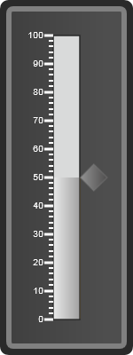
Figure 19: Vertcial linear gauge
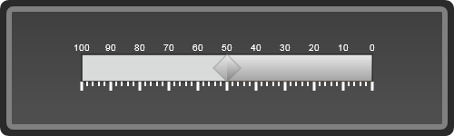
Figure 20: Horizontal linear gauge
Frame Types
The linear gauge can have the following three frame types:
· Rectangle
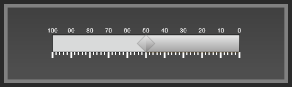
Figure 21:Horizontal linear gauge with a rectangle frame
· Rounded rectangle
Figure 22: Horizontal linear gauge with a rounded rectangle frame
· Cropped rectangle
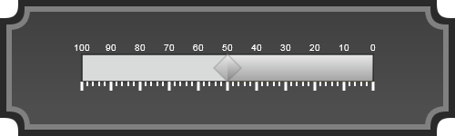
Figure 23: Horizontal linear gauge with a cropped rectangle
Pointer Types
The linear gauge can have 12 pointer types:
· Rectangle
· Triangle
· Ellipse
· Diamond
· Pentagon
· Circle
· Slider
· Pointer
· Wedge
· Trapezoid
· Rounded Rectangle
· Star
Figure 24:Vertical linear gauge with a rounded rectangle pointer
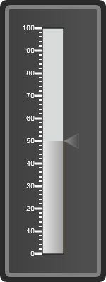
Figure 25: Vertical linear gauge with triangle pointer
Figure 26: Vertical linear gauge with wedge pointer
Range
The linear gauge supports the display of range, with a range meter. This shows you which values are within the specified range, and which are not.
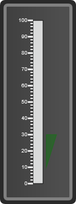
Figure 27: Vertical linear gauge with range
Scale
There are 3 types of scales in linear gauge, based on their shapes:
· Rounded
· Rectangle
· Thermometer
The scale helps to position and measure elements of the gauge such as ticks, labels etc.
Figure 28: Vertical linear gauge with rounded rectangle scale
Figure 29:Vertical linear gauge with rectangle scale
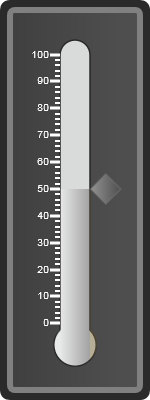
Figure 30: Vertical linear gauge with thermometer scale
Custom Label
The linear gauge supports for the custom label in which to display the own label to the linear gauge.
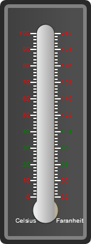
Figure 31: Linear gauge with custom labels
Appearance
The linear gauge has a flexible appearance, as you can apply
any one of the skins from the 14 skins that are applicable for the circular
gauge.
The following figures give you an idea of a few of the skins
available:
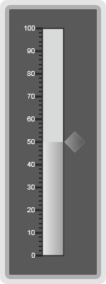
Figure 32: Vertical linear gauge with Office 2007 Black skin
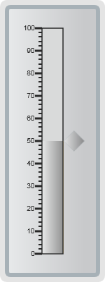
Figure 33: Vertical linear gauge with Office2007 Silver skin
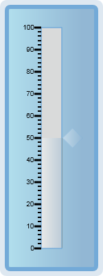
Figure 34: Vertical linear gauge with Blueberry skin